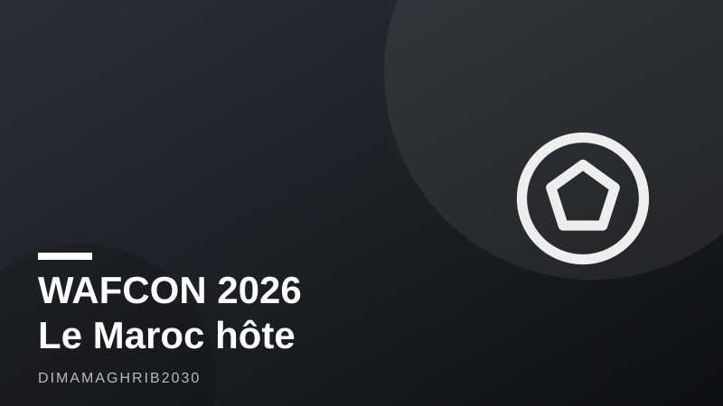

CAN féminine 2026 : le Maroc à l'heure du plus grand tournoi jamais organisé, entre Rabat et CasablancaMorocco Kicks Off Its Biggest-Ever WAFCON as the World's Largest Stadium Rises Nearby

Le compte à rebours est lancé. Dimanche 26 juillet 2026, à 18h00 heure locale, le Stade Olympique de Rabat s'embrasera pour le coup d'envoi de la CAN féminine Maroc 2026, avec un choc d'ouverture entre l'Algérie et le Sénégal, selon les informations rapportées par APAnews et L'Observateur. Pour la première fois de son histoire, la Coupe d'Afrique des Nations féminine change de dimension : seize équipes s'affronteront réparties en quatre groupes, contre un format plus restreint lors des éditions précédentes, précise CAF Online. Un élargissement qui traduit la montée en puissance du football féminin sur le continent, et qui place le Maroc, pays hôte, au centre de l'attention pendant plusieurs semaines, de fin juillet à mi-août 2026.
Rabat et Casablanca, les deux épicentres du tournoi
Le calendrier CAN féminine confirme la répartition des rencontres entre les deux métropoles du royaume. À Rabat, le Groupe A réunira le Maroc, l'Algérie, le Sénégal et le Kenya, tandis que le Groupe B prendra ses quartiers à Casablanca avec l'Afrique du Sud, la Côte d'Ivoire, le Burkina Faso et la Tanzanie, comme le détaille H24info. Les matches se joueront notamment au Stade Olympique de Rabat et au Stade Moulay El Hassan, deux enceintes déjà rodées aux grands rendez-vous internationaux. Pour les amateurs de football féminin marocain et les supporters venus de tout le continent, la billetterie CAN féminine fonctionne match par match via la plateforme officielle de la CAF, une organisation pensée pour fluidifier l'accès aux stades sur plusieurs semaines de compétition.
Au-delà du sport, cette CAN féminine 2026 est aussi un test grandeur nature pour le Maroc, qui multiplie les grands événements avant d'accueillir, avec l'Espagne et le Portugal, la Coupe du Monde 2030. Organiser un tournoi à seize équipes réparties sur deux villes exige une logistique comparable, à échelle réduite, à celle d'une compétition mondiale.
Le Grand Stade Hassan II, symbole d'une ambition XXL
Justement, quelques semaines avant le coup d'envoi de la CAN féminine, une autre annonce a rappelé l'ampleur des chantiers marocains liés au Mondial 2030 : le Grand Stade Hassan II, en construction à El Mansouria, dans la province de Benslimane, à une trentaine de kilomètres au nord de Casablanca, a atteint 40 % d'avancement en mai 2026, selon les chiffres publiés par Médias24. Le site totalise déjà 9,7 milliards de dirhams de contrats engagés, pour une livraison prévue en décembre 2027. À terme, l'enceinte pourra accueillir 115 000 spectateurs, ce qui en fera le plus grand stade de football du monde, devant les géants existants en Asie et en Amérique du Nord.
Le chantier mobilise actuellement 5 000 ouvriers, un effectif qui doit doubler pour atteindre 10 000 travailleurs au pic de l'activité, rapporte encore Médias24. Signe que l'ambition ne se limite pas à la taille : le design du Grand Stade Hassan II a été distingué lors des Architizer A+Awards 2026, une reconnaissance internationale pour un projet architectural pensé comme la future pièce maîtresse du Maroc Coupe du Monde 2030.
Entre les gradins qui se remplissent à Rabat et Casablanca pour la CAN féminine et les grues qui s'activent à El Mansouria pour le stade du futur, l'été 2026 dessine les deux visages d'un même élan : celui d'un Maroc qui construit, sur et en dehors des terrains, l'héritage du football africain et mondial.
The countdown is on. On Sunday, July 26, 2026, at 18:00 local time, the Stade Olympique de Rabat will host the opening match of WAFCON 2026, with Algeria facing Senegal in the tournament's curtain-raiser, according to reporting from APAnews and L'Observateur. For the first time in its history, the CAF Women's Africa Cup of Nations expands to a 16-team format spread across four groups, up from a smaller field in previous editions, CAF Online confirms. It's a leap that reflects the surging momentum of women's football on the continent, and it puts host nation Morocco squarely in the spotlight for weeks, spanning late July to mid-August 2026.
Rabat and Casablanca share the spotlight
The WAFCON 2026 calendar confirms matches will be split between Morocco's two largest cities. In Rabat, Group A brings together Morocco, Algeria, Senegal and Kenya, while Group B sets up in Casablanca with South Africa, Côte d'Ivoire, Burkina Faso and Tanzania, according to details published by H24info. Games will be played at venues including the Stade Olympique de Rabat and Stade Moulay El Hassan, both battle-tested hosts of major international fixtures. For fans of Morocco women's football and supporters traveling from across the continent, tickets are being sold match-by-match through CAF's official ticketing platform, a system designed to manage demand across weeks of competition.
Beyond the pitch, WAFCON 2026 also doubles as a dress rehearsal of sorts. Morocco is stacking major sporting events in the run-up to co-hosting the 2030 World Cup alongside Spain and Portugal, and staging a 16-team tournament across two cities demands logistics that mirror, at smaller scale, what a global competition requires.
The Grand Stade Hassan II: a symbol of outsized ambition
Fittingly, just weeks before WAFCON's kickoff, another announcement underscored the scale of Morocco's World Cup 2030 stadium program. The Grand Stade Hassan II, under construction in El Mansouria, in Benslimane province roughly 38 kilometers north of Casablanca, reached 40% completion as of May 2026, according to figures reported by Médias24. The project has already committed 9.7 billion Moroccan dirhams in contracts, with delivery targeted for December 2027. Once finished, the venue will seat 115,000 spectators, making it the world's largest football stadium, surpassing existing giants in Asia and North America.
The site currently employs 5,000 workers, a workforce expected to double to 10,000 at peak construction, Médias24 further reports. The ambition isn't limited to sheer size, either: the Grand Stade Hassan II's design recently earned recognition at the Architizer A+Awards 2026, international acclaim for a structure conceived as the centerpiece of Morocco's World Cup 2030 legacy.
Between the stands filling up in Rabat and Casablanca for WAFCON and the cranes rising over El Mansouria for the stadium of the future, the summer of 2026 tells two sides of the same story: a Morocco building, on and off the pitch, the next chapter of African and global football.